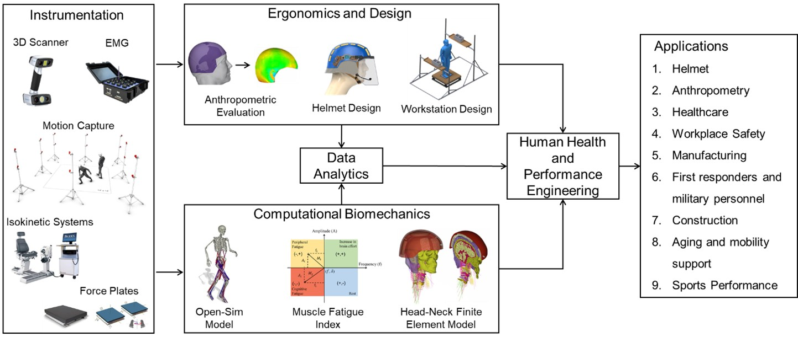

About Me
Hi, my name is Leonardo Wei, a recent Ph.D. graduate in Industrial, Manufacturing, & Systems Engineering from Texas Tech University, passionate about mechanics, human motion, and ergonomics. Prior to my Ph.D. I have obtained a bachelors degree in Mechanical Engineering from Pontifical Catholic University of Rio de Janeiro.
My research expertise lies at the intersection of experimental and computational biomechanics, where I integrate methods and knowledge drawing from ergonomics and design, machine learning, computational mechanics, and musculoskeletal health biomechanics, with the purpose of enhancing human health and performance in both clinical and non-clinical settings.
Currently I am working on evaluating the fall risks and the biomechanical feasibility of shoulder exoskeletons in asymmetric tasks that are performed on a wobbling platform and on understanding how exoskeleton modulates motor modules in various individuals, with the purpose of designing an EMG-assisted exoskeleton.
Research
I worked on projects focusing on human-centered firefighter helmet design, head anthropometric modeling, OpenSim-based cervical spine biomechanical analysis, mathematical modeling of multi-muscle fatigue, head-neck finite element (FE) modeling, and analyzing the biomechanical feasibility of three passive shoulder exoskeletons in construction works. Some of these projects are funded by the U.S. Department of Homeland Security (DHS), the National Institute of Occupational Safety and Health (NIOSH), and the National Science Foundation (NSF). These projects gave me a solid foundation in movement biomechanics, muscle fatigue assessment, OpenSim- and FE-based human body modeling, and rigorous statistical and computational modeling techniques.

Schematic Representation of My Research Approach
News
- Oct 2025 — Attended the Human Factors and Ergonomics Society Conference, Chicago, USA
- Sep 2024 — Attended the Human Factors and Ergonomics Society Conference in Phoenix, USA
- Aug 2022 — Attended the American Society of Biomechanics Conference in Ottawa, Canada
Publications
Wei, L. H., & Chowdhury, S. K. (2025). An electromyography-based multi-muscle fatigue model to investigate operational task performance. Computer Methods in Biomechanics and Biomedical Engineering, 1-17. Available at https://doi.org/10.1080/10255842.2025.2510369.
Wei, L. H., Sudeesh, S., Chakroborty, S., & Chowdhury, S. K. (2025). A comprehensive methodological framework for 3D head anthropometric shape modeling of a small dataset. Ergonomics, 1-16. Available at https://doi.org/10.1080/00140139.2025.2518306.
Wei, L. H., Paulon, G. M., Sarker, P., & Chowdhury, S. K. (2025). Sustained-till-exhaustion effects of firefighter helmets on neck muscle fatigue mechanism. Ergonomics, 1-17. Available at https://doi.org/10.1080/00140139.2025.2548004.
Paulon, G. M., Sudeesh, S., Wei, L. H., & Chowdhury, S. K. (2024). Firefighter helmets and cervical intervertebral Kinematics: An OpenSim-Based biomechanical study. Journal of Biomechanics, 176, 112364. Available at https://doi.org/10.1016/j.jbiomech.2024.112364.
Zheng, L., Pan, C., Wei, L., Bahreinizad, H., Chowdhury, S., Ning, X., & Santos, F. (2024). Shoulder-assist exoskeleton effects on balance and muscle activity during a block-laying task on a simulated mast climber. International journal of industrial ergonomics, 104, 103652. Available at https://doi.org/10.1016/j.ergon.2024.103652.